![]()
Remove Objects from Video Online For Free
Remove unwanted objects fast, safe and free. Fotor's online video objects remover helps you quickly erase people, emoji, text, logos, and moving elements from videos without losing quality.
Drag video here or click to upload
Supported formats:
MP4
MOV
Maximum upload limit for video file: 4K, 60s, 60FPS, 500M
Recent videoNo video ? Try one of these
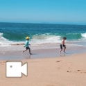
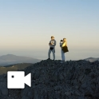
How to Remove Objects from Videos Online
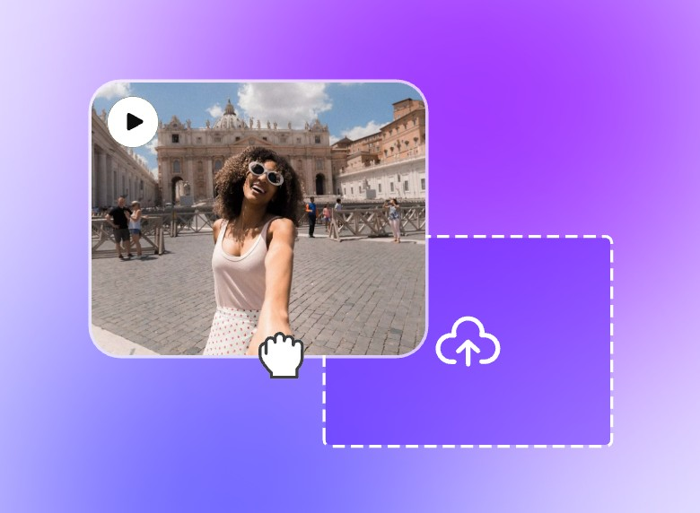
Step 1: Upload Your Video
Click the "Upload" button and select the file from your device to Fotor's video objects remover. We support video file formats like MP4 and MOV.
Step 2: Paint Over the Objects to Remove
Use the "Brush tool" to paint over the objects you want to remove. Then, click the "remove" button, and we will automatically remove anything from the video.
Step 3: Download and Save
After removing the object from your video, download it in MP4 format and save it for any purpose.
Remove Anything from Video in Seconds
Our AI video object remover can remove anything from a video, like logos, watermarks, backgrounds, emojis, moving elements, and more. Whether you need to clean up your video for business purposes or individual use, our free video object eraser is perfect for anyone who doesn't have any editing experience.
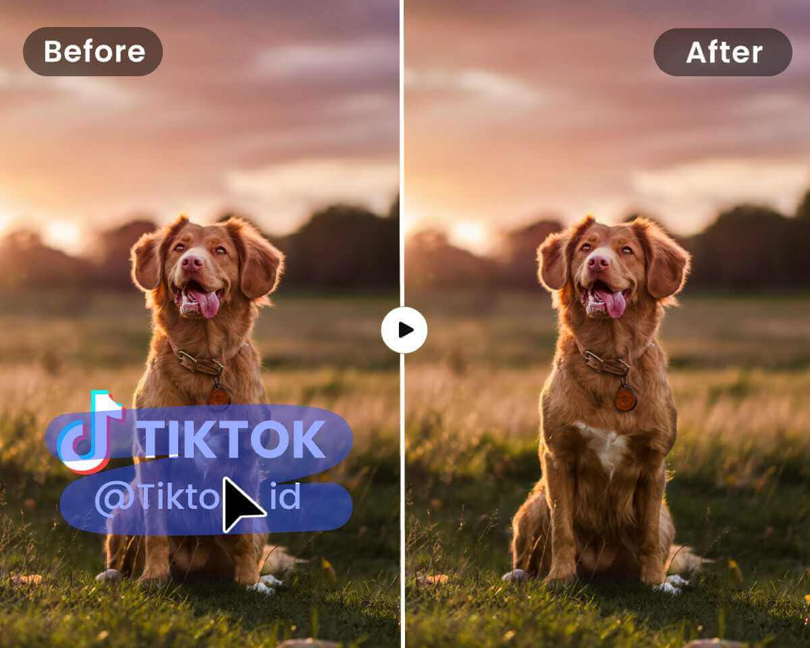
Remove Logo from Video
If you get video content from another brand and want to remove their logo to make it your own, or just need to customize different brand elements with different audiences. Removing logos can make it easier to showcase your video without any branding distractions. Whether it's a distracting watermark, a brand logo, or any unwanted graphic, Fotor video objects remover makes it easy to clean up your content. With just a few clicks, you can erase logos seamlessly, leaving your video looking neat and professional.
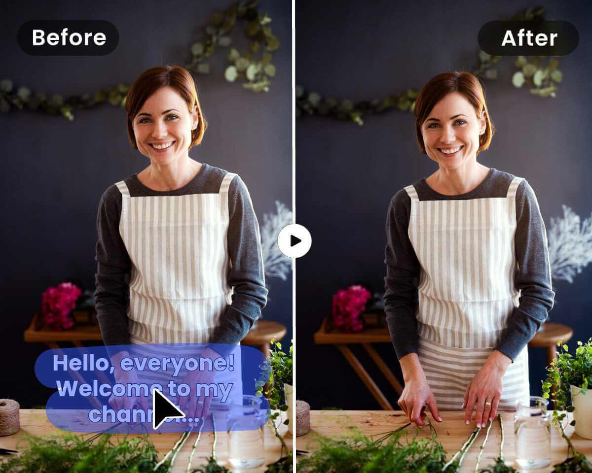
Remove Text from Video
If you have confidential data in text form within a video that needs to be removed, or if text overlays are cluttering your brand video and detracting from the main visuals, removing text, watermarks, subtitles, captions, or any other unwanted elements is crucial for creating clear and high-quality video content. Fotor’s Video Text Remover is ideal for making the video more visually appealing and focused on the important elements with just a single click. It ensures the text is removed cleanly without compromising the quality of your video.
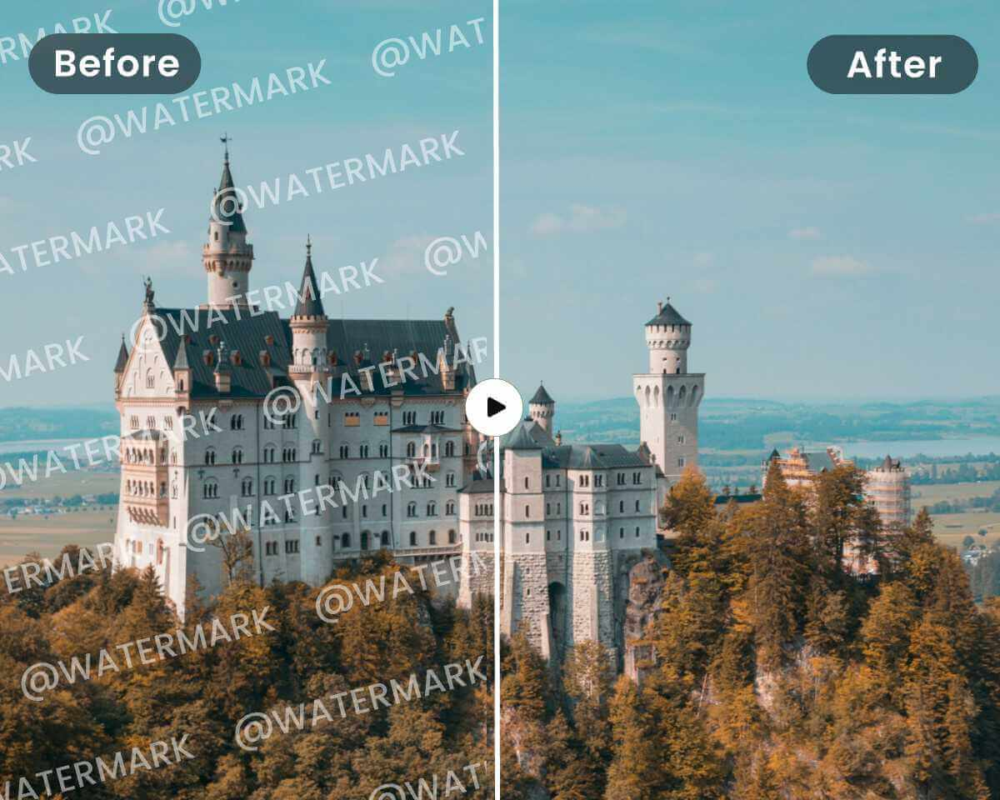
Remove Watermark from Video
Enjoy the power of AI to remove watermark from video. Effortlessly remove logo, text, date stamps, and more.No editing skills required. Simply upload your video and let our AI-powered technology do the work, delivering clean, watermark-free videos quickly. Start using our AI Video Watermark Remover today and enhance the visual quality of your content without any hassle!
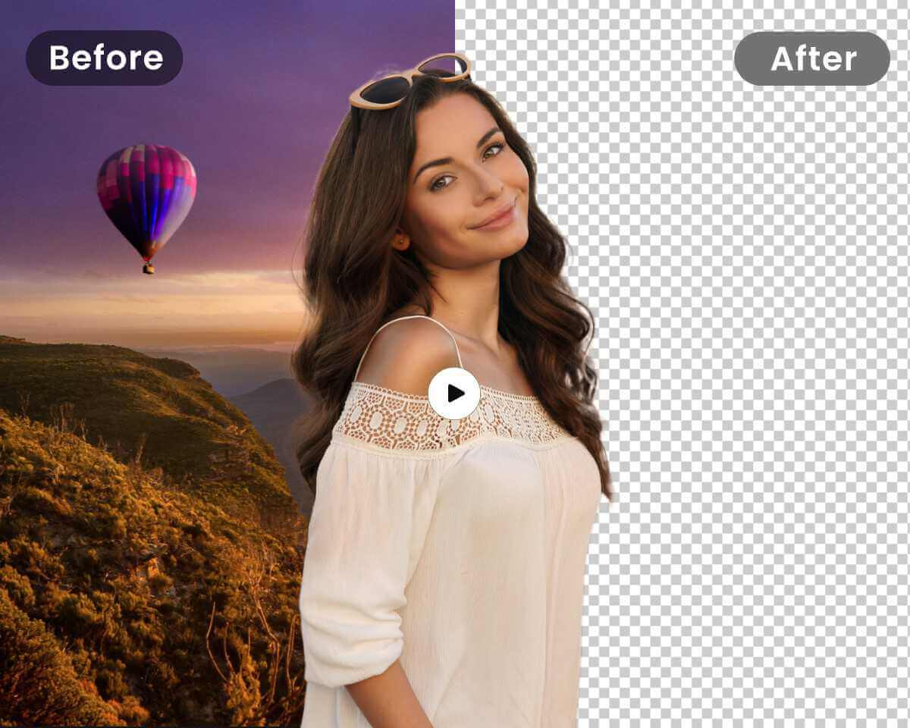
Remove BG from Video
Our BG Remove Video Tool uses cutting-edge AI to remove backgrounds from your videos, like peoples, and replace them with any backdrop you choose. Whether for green screen effects or creating professional presentations, we ensure precise and clean background removal.
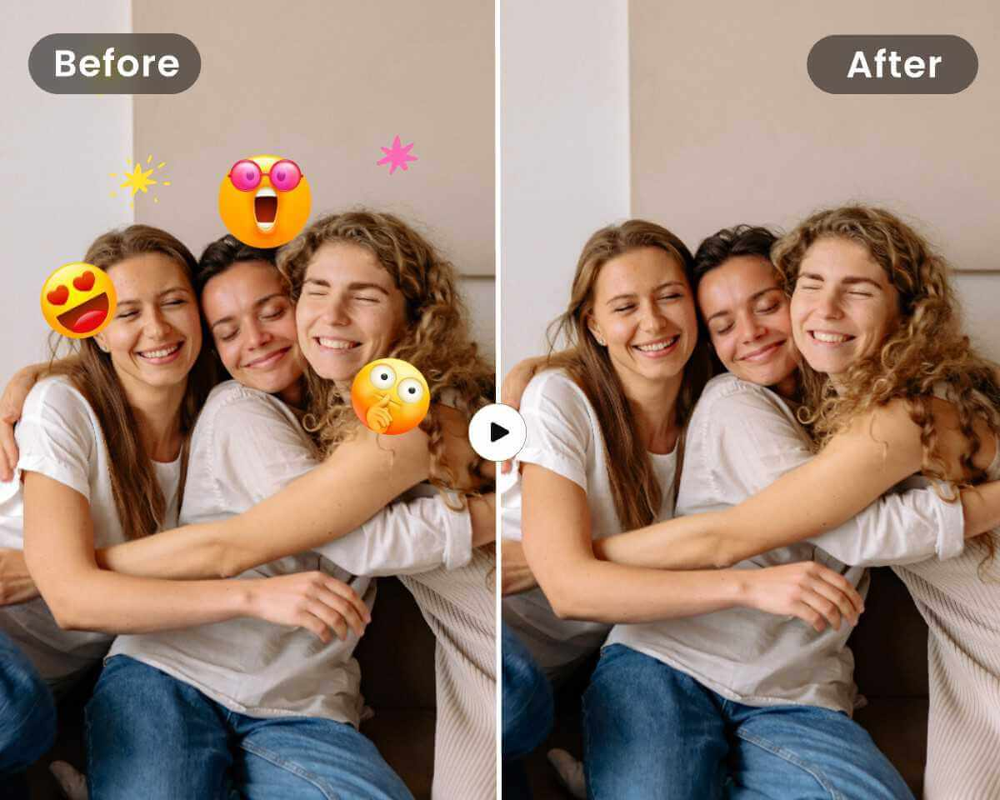
Remove Emoji from Video
Our Emoji Remover tool makes it simple to remove emojis from your videos. Using advanced AI technology, it detects and eliminates emojis seamlessly, ensuring your videos remain clear and professional. Ideal for refining social media content or repurposing videos for different platforms.
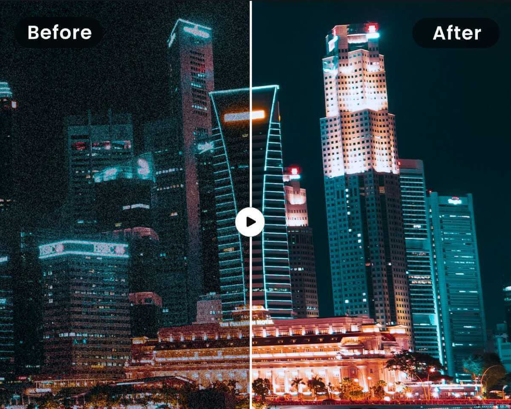
Remove Video Blur
Enhance the clarity of your videos with our Video Blur Remover. Fix blurriness and make video clearer online easily and quickly. Let Fotor transform your clip with clarity like magic! Perfect for improving the quality of your videos, whether they are captured in motion or affected by focus issues.
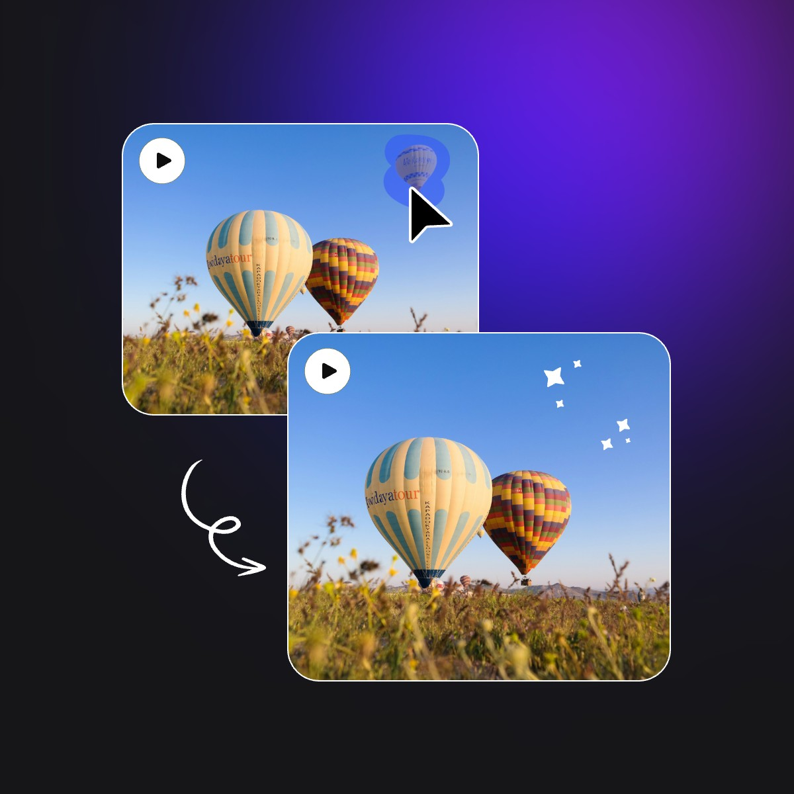
Remove Unwanted Objects Quickly
Removing objects from videos used to require significant time and video editing skills. However, with Fotor's object remover, you don't need to be a video editing expert. Removing anything from a video can now be done quickly and easily, even with moving elements. Simply upload your video, paint over the object you want to remove, and we'll take care of the rest for you in seconds. If you need to get rid of objects from still images, using our free photo object remover to quickly remove unwanted elements.
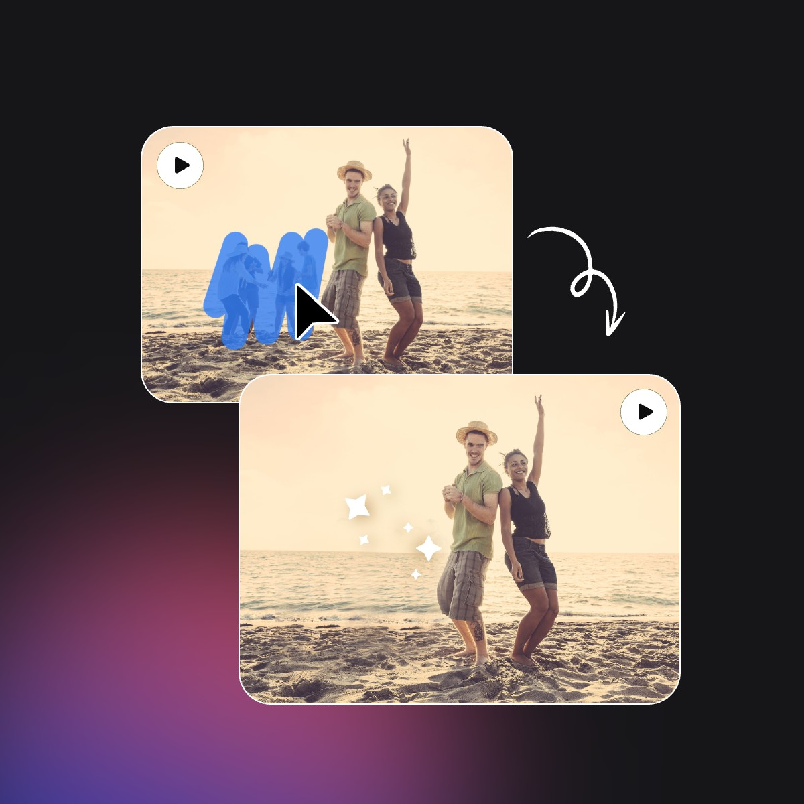
Remove People from Videos for Free
Do you have a beautiful beach video that's been unexpectedly photobombed or interrupted by passersby? Don't worry! Removing people from your video is free and secure with Fotor. Whether they're static individuals or moving passersby, you can achieve a clean and high-quality video without anyone getting in your way. Now, you are free to get what you think is most important in your video.
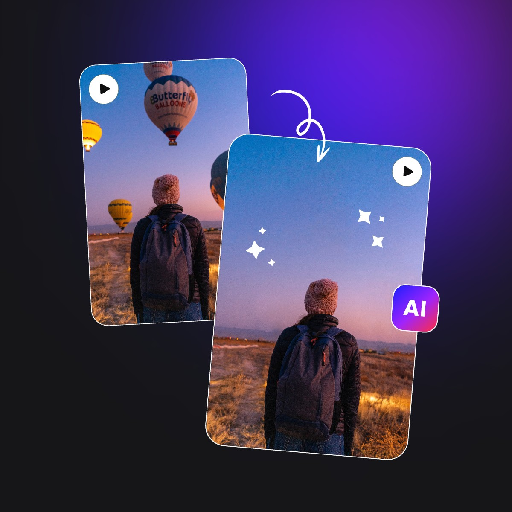
High-Quality AI Video Objects Remover
Fotor's AI Video Objects Remover is a tool designed to help you remove unwanted objects from videos without losing quality, powered by artificial intelligence that identifies and eliminates specific elements such as logos, text, moving cars, running people, or any other objects that you might want to get rid of in a video clip.
Fotor makes the tool easier to use by allowing you to erase and clean up your footage with just a single click. It's a free video objects remover for those who don't have any video editing experience.
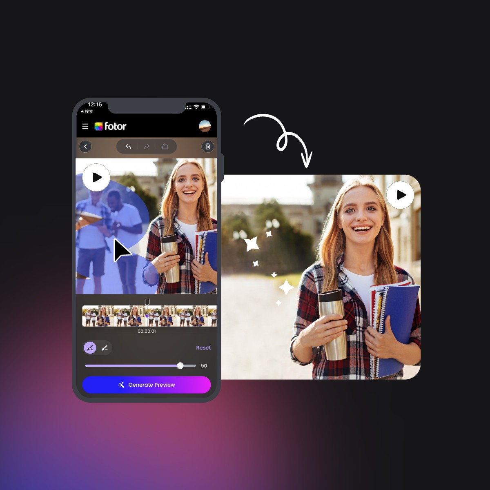
Remove Anything from Videos on Any Device
Whether it's for Facebook ads, influencer videos, or e-commerce marketing, our video object remover will help you achieve a clean video without any editing skills required. Plus, you can enhance your video anywhere using your phone or computer, saving you more time and money with our user-friendly tool.
Remove Objects From Video Without Blur
Fotor's object remover is perfect for anyone who wants to clean up their videos easily. It lets you take out any unwanted parts like random people or things in the background without causing any blur or losing quality. Powered by our AI technology, it works by smartly figuring out what should be behind the removed object and fills it in so smoothly that your video looks clear and untouched. It's great for anyone wanting their videos to look their best, from filmmakers to YouTubers.
Why Choose Fotor's Online Video Object Remover?
Fast and Instant Removal
Fotor's AI video removal tool guarantees to remove objects from videos faster, easier, and better than any other tools in market.
Free and Easy to Use
With our user-friendly interface, removing anything from a video is easy. With just one click, you can remove distractions within seconds, and it's completely free.
AI-powered Remover
Our AI-powered removal tool makes removing objects from videos faster than ever before. Cleaning up your videos is a breeze with our technology.
Secure and Safe Removal
Fotor ensures secure removal of objects from videos by using SSL encryption, ensuring your video files are safe and protected. Your edited videos are be deleted after 24 houres.
High-Quality Results
We provide results without compromising the original video quality. There won't be any loss of quality during the removal process, ensuring your videos look their best.

Remove Anything
In Fotor, you can remove various elements such as logos, text, people, camera timestamps, and any other obstacles from videos instantly.
Reviewed by
4.2
G2
4.6
Capterra
FAQ
Is Fotor's object removal tool free to use?
Yes, Fotor's object removal tool is completely free, enabling you to create preview videos up to 3 seconds long at no cost. However, producing full-length videos requires 20 credits per video.
Can Fotor's tool remove moving objects from videos?
What types of video file formats or size does Fotor support for object removal?
Will Fotor's object removal tool leave any watermarks or branding on my video?
Can I use Fotor's object removal tool on my phone？
How long does it typically take for Fotor to remove objects from a video?
What's the difference between remove object and remove watermark?
More Removal Features to Explore from Fotor
Tips for Object Removing
Start Removing Unwanted Object Today
Embark on a clutter-free journey with our advanced tool that helps you effortlessly remove any unwanted objects from your photos or videos.